Rumenotomy is a surgical operation in which the veterinarian opens the rumen through the left flank to remove foreign bodies, relieve impaction, or treat other conditions of the forestomach. It is a common life-saving surgery in cattle practice — especially in areas where animals swallow plastic bags, rope, wire and nails while grazing.
This guide explains when rumenotomy is needed, how the operation is performed step by step, and the care that brings the cow back to full health.
What Is Rumenotomy?
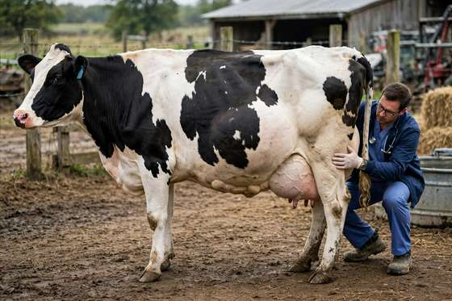
Ruminal impaction — a distended left flank is a key sign
Rumenotomy is a surgical operation in which the veterinarian opens the rumen through the left flank to remove foreign bodies, relieve impaction, or treat other conditions of the forestomach. It is a common life-saving surgery in cattle practice — especially in areas where animals swallow plastic bags, rope, wire and nails while grazing.
The operation is usually performed on a standing cow under local anaesthesia (paravertebral block). The rumen lies just under the left flank, so the surgeon can reach it directly through a flank incision, explore it by hand, and remove the contents without opening the whole abdomen.
When Is Rumenotomy Needed? (Indications)
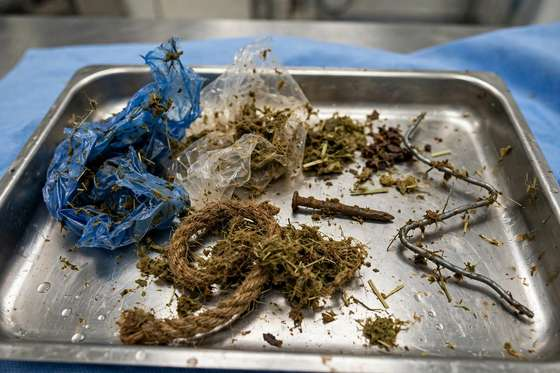
Foreign bodies removed from the rumen
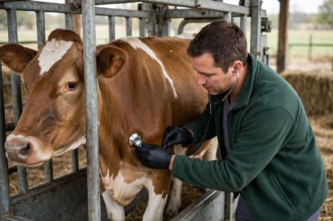
Weak rumen sounds point to impaction
1
Foreign body syndrome(plastic bags, rope, cloth, wire and nails swallowed while grazing; plastic balls block digestion and cause chronic weight loss)
2
Ruminal impaction(the rumen is packed with dry, hard feed that cannot move on; the cow stops eating and loses weight)
3
Recurrent bloat(repeated gas bloat that does not respond to medical treatment and needs exploration of the rumen)
4
Hardware disease (traumatic reticuloperitonitis)(a sharp nail or wire has pierced the reticulum; surgery explores and removes the object)
5
Rumen masses and abscesses(growths or pockets of infection inside the rumen that can only be reached by surgery)
Diagnosis Before Surgery
Before surgery the veterinarian takes a full history — what the cow eats, where it grazes, and how long it has been ill — and examines the animal carefully. The key signs are reduced appetite, loss of weight and condition, a distended left flank, weak or absent rumen movements, and pain when the belly is pressed. A metal detector passed over the belly may reveal swallowed metal, and ultrasound or X-ray can help where available. The cow is fasted for 12 to 24 hours before surgery to reduce the rumen contents.
The Operation — Step by Step
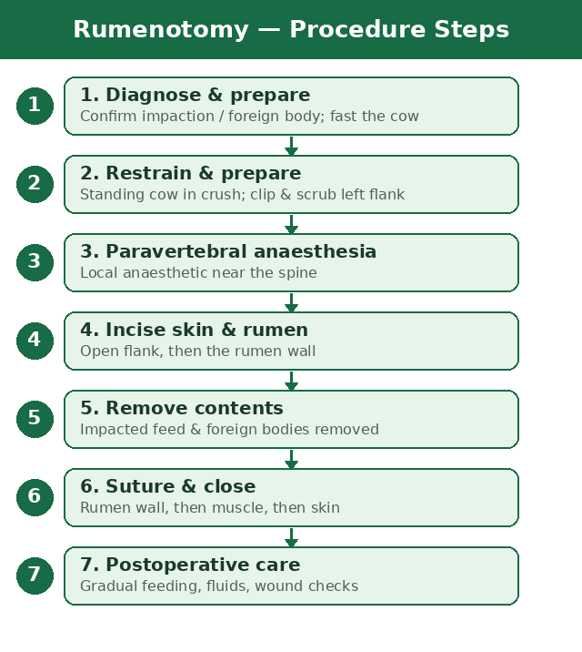
Procedure steps of a rumenotomy in cattle
1
Diagnose and prepare(confirm the diagnosis, fast the cow, and prepare sterile instruments and drapes)
2
Restrain and prepare the flank(standing cow in a crush; clip and scrub the left flank widely)
3
Give paravertebral anaesthesia(local anaesthetic is injected near the spine to numb the whole left flank)
4
Incise skin and muscle(cut through the flank layers to reach the rumen wall)
5
Fix the rumen to the skin(suture the rumen wall to the skin edge so rumen contents cannot leak into the abdomen)
6
Open the rumen and remove contents(incise the rumen, remove impacted feed and foreign bodies, explore the reticulum by hand)
7
Close in layers(suture the rumen in two layers, then muscle, then skin; apply an antiseptic dressing)
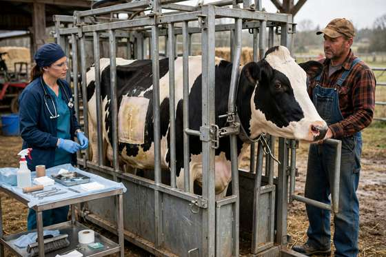
Restraint in a crush, flank prepared
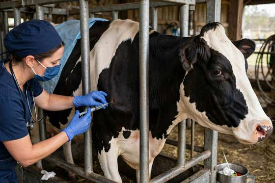
Paravertebral anaesthesia numbs the flank
Important: All surgical procedures must be performed by a qualified veterinarian under proper anaesthesia and aseptic conditions. Never attempt surgery on your own animals — incorrect technique causes infection, suffering and death.
Opening the Rumen and Removing Contents
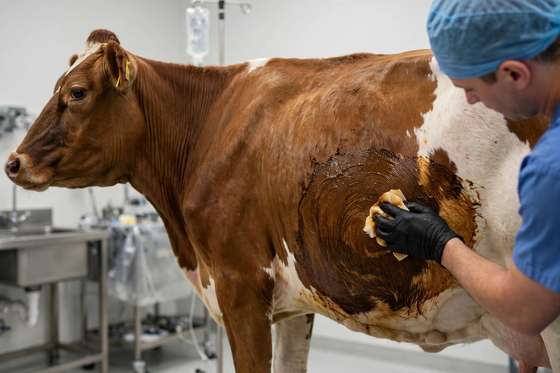
Final antiseptic scrub before the incision
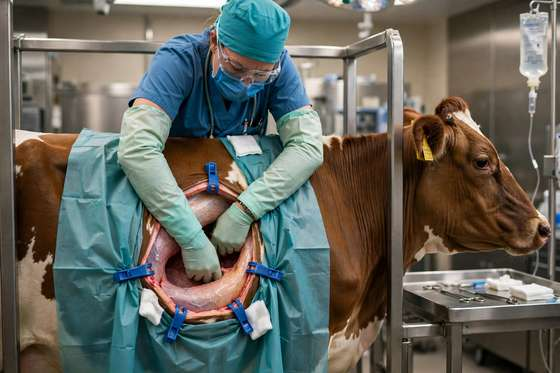
The rumen is explored by hand
Once the rumen is fixed to the skin edge, it is opened and the contents are removed — impacted feed is scooped out, and every foreign body is collected and counted. The surgeon then explores the whole rumen by hand, including the reticulum (honeycomb stomach) and the opening to the omasum, feeling for sharp objects, abscesses or masses that cannot be seen. Any sharp metal found in the reticulum is removed carefully.
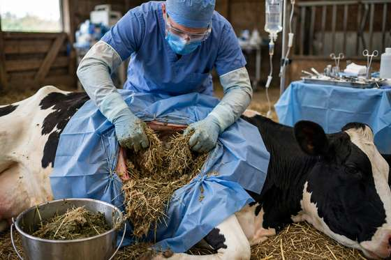
Impacted feed is removed by hand
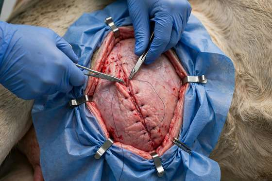
The rumen wall is sutured in two layers
Closing the Wound
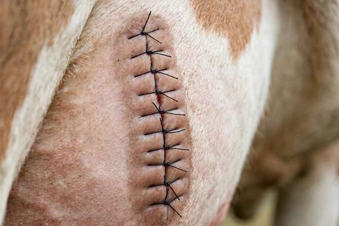
Neat skin closure on the left flank
The rumen is closed in two layers with absorbable sutures, burying the first layer so no suture material is exposed inside the rumen. The muscle layers of the flank are then closed, and finally the skin with strong non-absorbable sutures, removed after 10 to 14 days. An antiseptic dressing protects the wound, and the cow is given antibiotics and pain relief as prescribed.
Postoperative Care
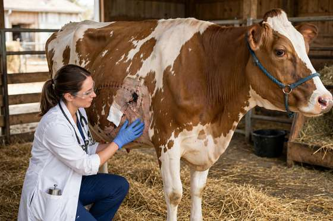
Postoperative check — wound and general condition
1
Restart feeding gradually(soft green fodder and small feeds for the first few days; normal feeding over about a week)
2
Give fluids if needed(oral or intravenous fluids help a dehydrated cow recover and restart the rumen)
3
Restore the rumen microbes(a cud transfer — rumen fluid from a healthy cow — restarts digestion faster)
4
Give medicines as prescribed(complete the full course of antibiotics and pain relief given by the veterinarian)
5
Check the wound daily(look for swelling, redness, discharge or broken sutures)
6
Monitor appetite and dung(returning appetite, normal dung and active rumen sounds mean the cow is recovering)
Complications
1
Peritonitis(infection inside the abdomen from rumen contents leaking during surgery — the most serious complication)
2
Wound infection(swelling, heat and discharge at the incision; needs veterinary treatment and wound care)
3
Wound breakdown (dehiscence)(sutures give way, often from infection or too much movement)
4
Adhesions(the rumen sticks to the body wall, which can reduce rumen movement and digestion)
5
Recurrence(if the cow keeps eating plastic and wire, the problem comes back and surgery may be needed again)
Prevention
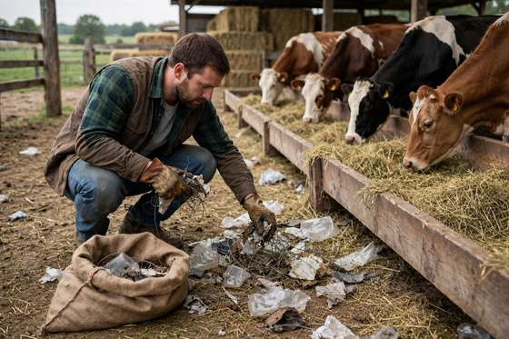
Clean feeding areas prevent foreign body syndrome
⚠ Important Tips:
Keep grazing areas, feed stores and yards free of plastic bags, rope, wire and nails.
Feed from clean troughs, not from the ground where rubbish mixes with fodder.
Give a balanced mineral mixture — mineral deficiency (pica) makes cows chew strange objects.
Ask your veterinarian about a rumen magnet — it traps swallowed nails and wire safely.
Check bought-in fodder and straw for wire, string and plastic before feeding.
Frequently Asked Questions
What is rumenotomy in cattle?
Rumenotomy is a surgical operation in which the veterinarian opens the rumen through the left flank to remove foreign bodies, relieve impaction, or treat other conditions of the forestomach. It is usually done on a standing cow under local anaesthesia. It is one of the most common life-saving surgeries in cattle practice.
When is rumenotomy needed in cattle?
Rumenotomy is needed for foreign body syndrome (plastic bags, rope, wire and nails swallowed while grazing), ruminal impaction that does not respond to medical treatment, recurrent bloat, and to explore the reticulum in suspected hardware disease. Signs include reduced appetite, weight loss, a distended left flank and weak rumen movements.
How is rumenotomy performed in cattle?
The cow is restrained standing in a crush and given paravertebral anaesthesia. The left flank is clipped and scrubbed. The surgeon incises the skin and muscle, brings the rumen wall to the incision and sutures it to the skin edge to prevent contamination, then opens the rumen, removes the contents and foreign bodies, explores the reticulum, and closes the rumen, muscle and skin in layers.
What foreign bodies are commonly removed from the rumen?
The most common foreign bodies are plastic bags, rope and string, pieces of cloth, wire, nails, and leather. Plastic bags are the biggest problem in many areas — they form large balls that block the rumen and stop digestion. Sharp metal objects can pierce the reticulum and cause traumatic reticuloperitonitis (hardware disease).
What are the complications of rumenotomy?
The main complications are peritonitis (infection inside the abdomen from rumen contents leaking during surgery), wound infection, wound breakdown, and adhesions between the rumen and the body wall. Careful technique — suturing the rumen to the skin edge before opening it — and good postoperative care greatly reduce these risks.
Can a cow eat normally after rumen surgery?
Yes, but feeding must be restarted gradually. For the first few days the cow is given soft green fodder and small amounts of feed, with plenty of clean water. Normal feeding is resumed over about a week as the appetite and rumen movements return. A cud transfer (rumen fluid from a healthy cow) helps restore the rumen microbes.
How can I stop my cows eating plastic and wire?
Keep grazing areas, feed stores and yards free of plastic bags, rope and wire. Feed from clean troughs, not from the ground. Give a balanced mineral mixture — mineral deficiency makes cows chew strange objects (pica). A rumen magnet, given by the veterinarian, traps swallowed nails and wire before they pierce the stomach wall.
گائے میں رومنوٹومی (معدے کا آپریشن) کب کیا جاتا ہے؟
جب گائے پلاسٹک کی تھیلیاں، رسی، تار یا کیل نگل لے اور معدہ بند ہو جائے تو یہ آپریشن کیا جاتا ہے۔ علامات میں بھوک کم ہونا، وزن گھٹنا، بائیں طرف پیٹ کا پھولنا اور جگالی بند ہونا شامل ہیں۔ ڈاکٹر کھڑی گائے پر مقامی بے ہوشی دے کر بائیں پہلو سے معدہ کھول کر یہ چیزیں نکالتا ہے۔ آپریشن کے بعد گائے کو آہستہ آہستہ نرم چارہ دیا جاتا ہے۔
Key Takeaway
Rumenotomy saves cows that have swallowed plastic, rope or wire — but prevention is far cheaper than surgery. Keep feeding areas clean, feed from troughs, and correct mineral deficiencies so cows stop chewing rubbish. With clean surgery and gradual refeeding, most cows recover fully within two weeks.